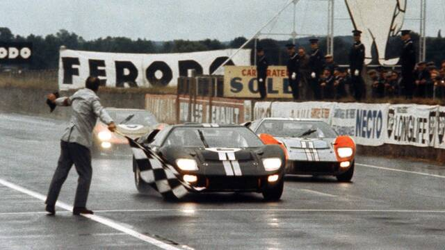
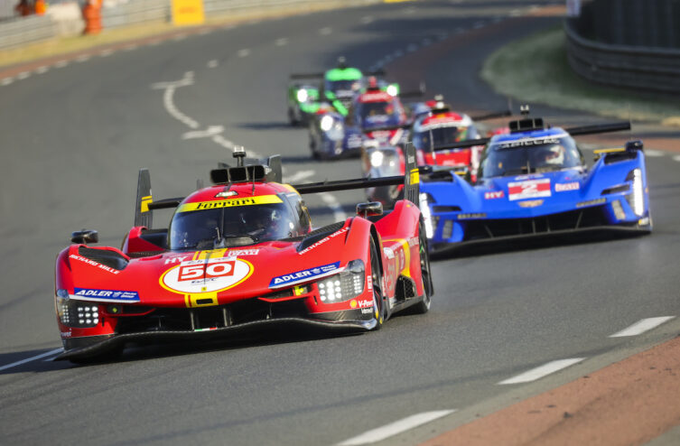

sont une compétition automobile d'endurance d'une durée de 24 heures, se déroulant en juin (généralement la vingt-quatrième semaine de l'année) sur le circuit des 24 Heures, un circuit routier du sud de la ville du Mans en France qui emprunte une section du circuit Bugatti. Cette épreuve, existant depuis 1923, est l'une des trois courses les plus prestigieuses au monde avec le Grand Prix de Monaco et les 500 miles d'Indianapolis.
La première course a eu lieu les 26 et 27 mai 1923 sur un circuit de 10,7 kilomètres autour de la ville du Mans. L'épreuve a été remportée par la voiture numéro 3, une Chenard & Walcker Sport pilotée par André Lagache et René Léonard.
.jpg)
Dans les années 1930, Bentley a dominé la course, remportant cinq victoires entre 1924 et 1930. Leurs voitures étaient réputées pour leur puissance et leur fiabilité.
.jpg)
La course de 1955 a été marquée par l'une des pires catastrophes de l'histoire du sport automobile. Au cours du premier tour, la Mercedes-Benz de Pierre Levegh a heurté la voiture d'un autre concurrent, se désintégrant et projetant des débris dans la foule. 83 spectateurs et Levegh lui-même ont perdu la vie, et des centaines d'autres ont été blessés. Cet accident a entraîné des changements majeurs dans la sécurité des circuits et des voitures.
.jpg)
.jpg)
Les années 1960 ont été marquées par une rivalité intense entre Ferrari et Ford. En 1966, Ford a remporté sa première victoire au Mans avec la GT40, mettant fin à la domination de Ferrari. Cette rivalité a donné lieu à des courses passionnantes et à des innovations technologiques majeures.
et Oui, tout à fait ! Les 24 Heures du Mans ont également été un terrain fertile pour l'innovation dans le domaine de l'hybridation. L'introduction de technologies hybrides dans la course a été un développement majeur qui a non seulement changé la dynamique de la compétition, mais a également contribué à promouvoir les progrès technologiques dans l'industrie automobile en général.
